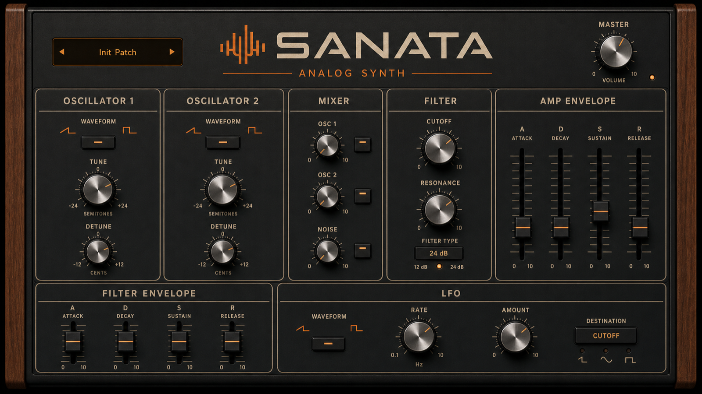

Eight-voice polyphony
A playable MIDI instrument with portamento and independent voice behaviour.
Original software instrument · Model 100
An eight-voice analog-style synthesizer designed and programmed by Romanich. Two oscillators, living modulation and deliberately imperfect circuitry shape a warm, expressive sound.

Sound demonstration
A short render from the instrument’s current development stage. Listen on headphones to hear its stereo movement and analog character.
Inside the instrument
SANATA combines a classic subtractive signal path with controls that introduce drift, age, drive and noise—details that keep each held note from feeling perfectly static.
A playable MIDI instrument with portamento and independent voice behaviour.
Sine, triangle, saw and square waves, oscillator mixing, detune and per-oscillator three-band EQ.
Cutoff and resonance controlled by a dedicated ADSR envelope and modulation amount.
Independent modulation routed to pitch, filter or stereo movement.
Adjustable drift, voice age, drive and circuit noise add instability and texture.
Split, overlay and mix views make the stereo output visible while playing.
Development notes
SANATA is a personal software-synthesis project written in C++ with JUCE. It began as a way to understand the tools behind Romanich’s music and became a working instrument with its own visual and sonic identity.
The current build is still in development and is not offered as a public download yet. This page will grow with new demos, presets and release information as the project develops.